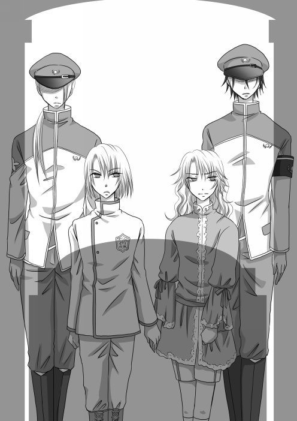
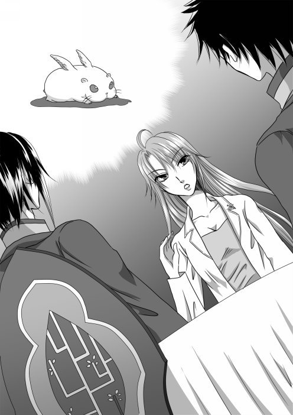
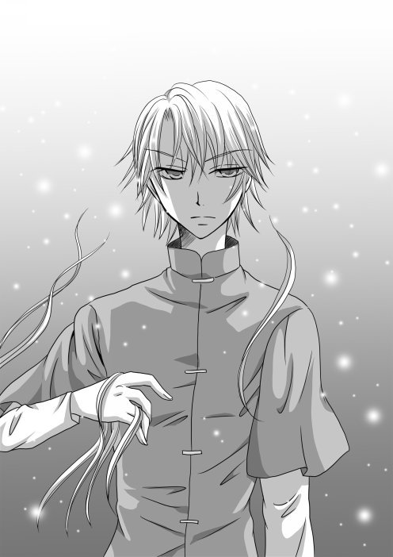

| HAL-Never took this road before,Distination Unknown- HALシリーズ (MoonLovers) | |
| Pro-ZELO | |
| (2019) | |
『 Never took this road before,Distination Unknown 』
―――薔薇色の日々に、私は目が眩んでいた。
それが、自分には決して手に入れることが出来ないものだと、
知っていたはずなのに.........。
「えーと......、聞き違いよね？ もう一度、言ってくれるかしら？」
三日徹夜で朦朧とする頭を押さえながら、ミサト・エーテル＝ルナリスは、目の前でニコニコと微笑む夫に、聞き返した。
「ええ、何度でも！ ......私の愛しい奥さん。アナタは、見ての通り、忙しい人ですし、休めと言った所で聞かないのも分かってます。けれど、そうすると、私たちのステラが、この家で、両親のぬくもりを知らずに育つことになってしまうんですよ？ ですから、私、主夫になります！」
カナン・レクタスは、迷い無く言い切った。それを、じいっと見やって、「正気？」とミサト・エーテル＝ルナリスは聞き返す。
「ええ、勿論。アナタが、学府を辞めないなら、私が辞めますよ。どうせ、私、研究は一人でも出来ますし、今は研究よりも、奥さんと娘が大事です」
これもまた、きっぱりと言い切ったカナン・レクタスを見て、ミサトは、「ちょっと、お茶......貰って良いかしら」と言うと、「はいはい、どうぞ。アナタの好きな、香草茶ですよ」とカナンは、手際よく、香草茶を用意する。
庭園に幽閉されていた頃、ミサトから教えられた香草茶だ。爽やかな香りを聞きながら、カナンは呟く。
「私は、子供の頃、寂しかったんです。だから、ステラには、寂しい思いをさせたくはない。それに、子供は、すぐに大きくなってしまいますから、出来るだけ、ステラの側に居たいんです」
カナンの言葉を聞きながら、ミサトは何かを考えているようだった。
「アナタ、『各国間定期連絡船プロジェクト』はどうするの？ アナタの割り振り、忘れたわけじゃ無いでしょうね」
『各国間定期連絡船プロジェクト』は、聖ルーン皇国の聖皇ユークリッド・エル＝ソラリスが提唱して始まったプロジェクトで、地球、レーデスライヒ共和国、聖ルーンの三国を、定期連絡船で結ぶというものだった。これで、三国の移動が自由になる。真に平和な時代が到来する―――その為の、第一歩と言われていた。
ミサト・エーテル＝ルナリス、カナン・レクタス夫妻は、それぞれ、ユークリッド・エル＝ソラリスから直々に指名されて、プロジェクトに参加している。エンジン開発と、光速加速システム開発が主業務で、さらに、カナンは共和国のリーダー、ロイ・ルディエールと共に、既存のエスプシステムへの、運行船管理システムとのインターフェースを担当している。
「私たちの方は、カインも居るし、なんとかなると思うけど......ロイ・ルディエールの方はどうするのよ」
「ああ、それならば、私は、なにもフル・タイムで働かなくとも良いんですよ。ですから、パート・タイムで働きます。それなら良いでしょ？」
ミサト・エーテル＝ルナリスは、しばし、黙り込んだ。じいっと、カナンの顔を見て、それから、根負けしたように呟く。
「わかったわ。確かに、まだ、歩き始めたばっかりのステラのことも心配だし。アナタが見ててくれるなら、それが一番安全だわ」
「そうでしょう？ じゃあ、早速、ユークリッドに辞表出してきますね！」
「ああ......じゃあ、私、少し寝るから......」
「ええ、ゆっくり休んで下さい。また、学府に戻るんでしょうけど、一緒に、食事くらい取りましょう？ もう、三ヶ月も、一緒に食事してないんですからね！」
分かったわ、と言いながら、バス・ルームへ向かったミサトの後ろ姿を見送って、カナンは、一路、聖庁へ向かった。カナンとミサトが暮らすのは、ソラリス・シティの一角にある学府研究者向けの居住区画だった。エーテル＝ルナリス家の長女とレクタス家の当主の二人が結婚したのだから、当然、居住区画の中でも特別な場所を与えられている。
聖ルーン王国は、土地が限られている。その為、ＨＳＰ（High Sensory Perception・高感覚的知覚）ランクや、職業、家格などに依って居住地は細かく区別されている。香草を育てることが出来る庭園を持つ一戸建ての屋敷というのは、破格の待遇だと言って良い。
自宅から、聖庁までは特別職のものだけが通行できる通路で行くことが出来るので、人目も気にならない。従って、ミサト・エーテル＝ルナリスが、どんな時間に帰宅しても、誰にも見とがめられることは無い。
カナンは、人気の無い通路を行きながら、（ごめんなさい）と、心の中で、謝った。
（ごめんなさい......）
何度も何度も、繰り返し、謝る間に、目頭が熱くなる。
当初、カナンは、妻であるミサトに、恋愛感情などは持ち合わせなかった。ミサトは勝手に押しかけて、勝手に、婚姻届と指輪を置いていったのだ。その指輪は、未だ、カナンの白い指を彩っている。それから、カナンは、本当に、ミサトと心を通わせることになり、生まれて初めて、満ち足りた時間を過ごすことが出来た。程なく、娘にも恵まれ、この幸せな日々は、永遠に続いていくのだと――――そのときのカナンは信じて疑わなかった。
そして、今この瞬間にも......。
（今なら、まだ、この幸せな生活を、失わずに済むかも知れない）と、カナンは、どうしても躊躇ってしまう。それを、無理やり奥歯を噛んで、ぐっと、こらえた。
（そうだ......。この、幸せな生活も、ただの、虚像だったのだから......）
だから、捨てるしかない、とカナンは思う。涙が頬をぬらしたのを、無理やり手の甲でぬぐい去って、カナンは足早に行く。
（もう、引き返せない――――引き返さない）
そう、心の中に、深く、刻みつけ。
「ごきげんよう、ロイ」
カナンは聖庁の一角に設けられた、ロイ・ルディエールの研究室へ入っていった。
「ああ、カナンか......」とロイは、カナンの顔を見るなり「大丈夫か？」と声を掛けて、立ち上がった。カナンの細い肩を叩いて「酷い顔だぞ」と軽口を叩いてから、茶の支度をする。ロイ・ルディエールが好むのは、緑茶だ。カナンも、ここに来て初めて飲んだのだが悪くない味だった。
「辞表、出してきたのか？」
「ええ......これで、晴れて、私もパート従業員ですよ」
はは、とカナンは笑う。その目と鼻が赤く腫れていた。ロイは、何も言わずに、カナンにアイシング用のパックを投げて渡す。カナンは戸惑ったが、それを顔に押しつけて、素直に、目を冷やした。
「あんたの奥さんって、あの、ミサト・エーテル＝ルナリスだろう？ 納得したのか？」
ロイが、緑茶を差し出す。それを、気配だけで察して、カナンは一口、飲んでから答えた。
「ええ。全く、疑うことも無かったと思います。......私ね、結婚してからこの方、ずっと、『マリッジ・ピンク』って言われてましたけど、まさか、それを逆手に取ることが出来るとは思いませんでした」
ふふ、とカナンは苦笑する。その向かいにロイは座り、カナンの話にじっと耳を傾けていた。
「彼女に隠し事がたくさんあったのだとしても―――私の気持ちは、真実でした。だから、彼女は、私の言葉を、もう、疑わないと思います」
「そうか......」
「ええ、私は、結局『カナン・レクタス』になることは出来ませんでしたが......、より、可能性のある未来のために、働くんです。それだけは、変わりません。それと......、私自身が寂しい幼少期を過ごしましたので、ステラに、その思いをさせたくないというのまでは、本当ですからね」
カナンが笑う。無理をして、笑っているのは、ロイにも分かった。
「......寂しい幼少期って、どんなだったんだ？」
「そのまんまですよ」と呟きながら、カナンは、余計なことに気がついた。ロイでさえ、カナンの幼少期を気にした。だが、ミサトは、そんなことを微塵も気にはしなかった。つまり、ミサトは、カナンに関心が無い。愛情の反対語は、憎悪ではなく『無関心』という言葉を思い出し、カナンの胸は鈍く痛んだ。
「そのまんまってもなぁ、いろいろあるだろうよ」
「なんです、あなた、絡み癖のあるオッサンみたいに。まあ良いでしょう。あなたにも多少関わりのあることですから、お教えしておきましょうか。まずは、私の出身ですが、このソラリス・シティではありません。辺境とまでは言いませんが、地方都市のような場所で生まれました。元々は、ちゃんとした名前で呼ばれていたはずですけれど、服飾で有名な都市だったので、『レスタス・シティ』と呼ばれていましたよ―――......」
レスタス・シティは、繊維の街だった。そこで一大勢力を誇っていたのが、服飾ブランド『レスタス』グループである。街一つを丸ごと取り込む形で発展し、聖ルーン皇国の服飾については、『レスタス』グループがほぼ寡占する形となっていた。
そんな街であるから、『レスタス・シティ』というのは、住人のほぼ八割は、『レスタス』グループに勤めるという状況で、当時、マリアヴェルトと呼ばれたカナン・レクタスは、街の中で、ぽつん、と孤立した生活を送っていた。
そもそも、『賢者』と呼ばれ尊崇されるはずの、レクタス家が、なぜ、田舎のレスタス・シティに住んでいたのか、それはカナンには分からない。ただ、レクタス家の家名に相応しく、広大な屋敷を有しており、そこに、使用人が居るわけでもなく、カナンと父親の二人で住んでいた。
父親は、レスタス・シティ大学で数学教授として働いていた。幼かったカナンは、父親と過ごすことは殆ど無かったが、数学を教えて貰っている間だけは、父親と一緒に居ることが出来たので、日常生活のなかでも、数学だけに特化して勉強するようになっていく。
「マリィは、とても優秀だね。大学の生徒より、飲み込みが早い。将来が楽しみだな」
父が褒めてくれるのが、カナンは、何よりも嬉しかった。
父の名を、カナンは、『カナン・レクタス』としか知らない。カナンが物心ついた頃には、すでに父は『カナン・レクタス』を名乗っていたからだ。
『カナン・レクタス』は、レクタス家当主が代々襲名する名乗りである。『カナン・レクタス』を名乗ってからは、元々の本名を奪われる。従って、カナンは父親の名前を、知らなかった。
それをカナンは不便に思ったことは無かった。父と過ごす時間は、あまりにも短かったからだ。いずれ、自分も父の後を継いで『カナン・レクタス』になるのだ、と信じて疑わなかったこともある。いずれにせよ、カナンと父親の二人暮らしは唐突に終止符が打たれた。カナンが父親と過ごした時間は短い。カナンが、五歳の三月、突如として、禁中に召喚されたからである。
カナン―――マリアヴェルトに下った命は、皇太子ユークリッド・エル＝ソラリスの『ご学友』としての召喚だった。年齢が近い名家の子供で、優秀な人材ということが、マリアヴェルトに白羽の矢が当たった理由のようだ。
ひとりぼっちで、マリアヴェルトは禁中に連れてこられた。
マリアヴェルトは、『これは役目なのだから』と自分に言い聞かせて、皇太子と、なんとか仲良くしなければ、という一念で、ユークリッドのあとをついて回ったが、
「うるさい！ お前なんかあっちに行け！ どうせ、お前も、聖皇猊下とおんなじなんだろう！」
とかんしゃくを起こされる。そうすると、今度は、マリアヴェルトの方に非がなくとも、ユークリッドの『ご学友』としての役目が果たせていないと、叱責を受ける。叱責をするのは、禁中にいた唯一の親戚、叔父のイリスファルシ・レクタスだった。彼は、研究者として、学府で働いている『優秀な人材』だったようで、聖皇とも近い存在であった。
のちのちになって知ったことだが、マリアヴェルトが禁中に召喚された背景には、聖皇が、ユークリッドから完全に関心を失ったことが影響している。この年。２３１７年。歴史上で、大きなイリーガルが発生した。
ハヤト・エーテル＝ルナリスの誕生である。
ハヤト誕生は、この先、閉塞する『未来』を切り開くことが出来る、劇薬、であった。すくなくとも、ハヤト・エーテル＝ルナリスの誕生を、心待ちにしていた人物たちが居たと言うことだ。
かくて、五歳のマリアヴェルトは、ユークリッドから邪険にされ、伯父から叱責を受け、誰一人味方が居ない中、一人、禁中で生きなければならなかった。田舎のレスタス・シティで過ごしていたマリアヴェルトには、禁中の作法も、都会であるソラリス・シティにも馴染めずに、ほかの者たちから苛められることもしばしばだった。
無論、マリアヴェルトが苛められていたことなど、イリスファルシもユークリッドも承知していただろうが、そんなことは彼らにとっては些末なことだった。少なくとも禁中では、自分の身に降りかかる火の粉を、自分で払える人間でなければ、一緒に巻き込まれて燃え尽きると言わんばかりに、知らんふりを決め込んでいた。
マリアヴェルトは、ひとり、禁中の中庭の片隅で本を読んで時間をやり過ごすことくらいしか出来なかった。それでも、一月二月と過ぎるうちに、やり過ごすことだけは覚えて、何も感じなくなった。そうなれば、ユークリッドのかんしゃくも、ほかの者たちからのイジメも、とくに、気にするほどのことでもなくなって行く。だが、マリアヴェルトの押さえ込んでいた感情が、一気に爆発するような事件が起きた。
伯父の名前を、『イリスファルシ』と呼べなくなったのだった。
それは、ある朝のこと。突如、伯父の名前が『カナン・レクタス』に変わった。マリアヴェルトは、嫌な予感に駆られて、実家のレスタス・シティまで向かった。
「お父さん！」
屋敷の中、どこを探しても、父親の姿は無かった。どういうことなのか、と通信を入れて、『カナン・レクタス』に確認を取ると、状況の説明よりも先に、
「馬鹿者！ ユークリッド殿下が、行方不明になったではないか！」
と叱責された。謝るのも業腹で、通信を無理やり切って、マリアヴェルトは、がらんどうの屋敷の中、ぽつん、と立ち尽くしていた。
（お父さんが、だまって、どこかに行くはずがない）
勤め先である大学だろうか、とレスタス・シティ大学に問い合わせを出したが、『そのような職員は該当者がおりません』という、機械的なアナウンスが返るばかりで、そう、まるで――――父親が、今まで、この世の中に存在した痕跡が一切消えたようだった。
「あの人だとおもうよ」
誰も居ないはずの屋敷に声がして、マリアヴェルトはとっさに振り返った。そこに居たのは、ユークリッドだったので、思わず、
「どうして、こんな所に？」
とマリアヴェルトは聞いていた。
ユークリッドは、今まで、マリアヴェルトと殆ど会話をしたこともない。いつも、かんしゃくをおこして、マリアヴェルトに八つ当たりをするだけだった。
「君のお父さん。たぶん、あの人に殺されたんだと思う」
ユークリッドの言葉を、マリアヴェルトは、とっさに「嘘だ！」と否定していた。
「いっつも、君は、嫌なことばっかり言うんだ！ あっち行けとか、うるさいとか！ 僕だって、君みたいな、分からず屋と、一緒に居たくないよ！ 僕は、君の話し相手になるのが仕事だから、君の側に居るだけだ！ 君みたいな、嫌なヤツなんか！」
今まで押さえ込んでいた分、マリアヴェルトは、思いっきりユークリッドを罵っていた。感情が高ぶって、泣きじゃくりながら、次第にろれつも回らなくなりながら、ひたすらユークリッドを罵って、マリアヴェルトは、そのうち、ボキャブラリーがつきたのか、ひきつけを起こしたように、しゃくり上げていた。
マリアヴェルトは、ユークリッドが、じっと罵詈雑言を聞いていたのだと思うと、急に、顔から火が出そうなほど恥ずかしくなって、うつむいてしまった。
「マリアヴェルト......だっけ？ 君。あの人......今の、カナン・レクタス。あの人が、カナン・レクタスを名乗れるんだから、君のお父さんは、すくなくとも、システム上にいないんだ」
ユークリッドの言葉に、マリアヴェルトが関心を持った。
「システムに居ない......？」
「カナン・レクタスは、システムに一人しか、定義できない、特別な名前。だから、原則、カナン・レクタスが死んだときにしか、次のカナンは、継承できないはずなんだ」
「詳しいね」
マリアヴェルトが、不審そうに聞いた。ユークリッドは、特に、表情らしい表情も浮かべずに、「代々、同じ名前を名乗るなんて、珍しいから、調べたの。......そうしたら、そんなところまでは調べられた。その先、調べたら、多分、怒られるから」と言う。
ユークリッドのその言葉を聞いて、マリアヴェルトはピンと来た。『高度エスプ解析能力』と呼ばれる能力だ。マリアヴェルトも、その父である先代カナン・レクタスも、現カナン・レクタスとなったイリスファルシも、皆、この能力を持っている。
「僕らには、権限が無いから、調べられるのは、こんなもんだよ。これ以上やったら、あの人が怒るから、絶対にやめておいた方が良い」
妙だな、とマリアヴェルトは思った。ユークリッドの口から出る『あの人』というのは、おそらく、現・カナン・レクタスのことのはずだ。なぜ、こうも毛虫のように嫌っているのか、マリアヴェルトにはよく分からなかった。
「あの人、キライなの？」
マリアヴェルトが聞くと、
「当たり前だ！」
とユークリッドは答える。
「なぜ？」
「あの人、いつも、イヤなことばかり言う！」
「そう......、僕は、君が、ちゃんとしてくれないのは、僕のせいだって、あの人から怒られるけどね。うんざり」
マリアヴェルトの言葉を聞いて、ユークリッドが、鳩のように目を丸くした。
「私がちゃんとしないのは、私のせいだ。お前のせいにされてたまるか！」
「それなら、そう、あの人に言ってよ」
ムッとしながらマリアヴェルトが言うと、ユークリッドは、大きく肯いた。
「うん。キッパリ言う。それで、お前も、禁中から去れば良いだろう」
禁中から去る――――。
マリアヴェルトは、その言葉の意味を、もう一度反芻した。禁中からの戻り先は......、一応は、この屋敷になるのだろう。だが、ここは、『レクタス家当主の屋敷』のはずだ。つまりそれは、現、カナン・レクタス―――かつて、イリスファルシと呼ばれた男の所有物になるのだ。つまり。
「......禁中を追い出されるのは、困る」
マリアヴェルトはポツリ、と呟いた。
「なぜ？ お前のおうちは、ここだろう？」
「ここは、代々のカナン・レクタスの家だ。つまり、今は、あの人の家だ。だから、僕には、戻る先が無い。あそこを追い出されたら、僕は、どこにも行くところが無いんだ。だから、君がどんなにイヤでも、僕は、君の話し相手として、あそこに居る」
それは、至極冷静な、現状認識だった、と言える。
「じゃあ、わかった。お前。私と、手を組まないか？」
手を組む、という子供らしくない申し出に、マリアヴェルトは苦笑した。
「なにを？」
「私は、問題行動を起こさない。お前とも、そこそこ、親しくやってやる。だから、私に関わるな」
「それでは、君のお話相手にはならないだろう」
「目に見えるところでは、お友達をやれば良い。それ以外は、関わらない。そうすれば、お前も、あの人から、余計なお小言を食らわなくて済むんじゃないか？」
たしかに、とマリアヴェルトは思った。確かに、そうすれば、あの人は、怒らないだろう。だけど、とマリアヴェルトは、ユークリッドの顔を見た。
「ねぇ、だけど、それで、君は僕に何をしてくれるの？ 今のは、全部、君に都合が良いことばかりじゃない」
「なんだ、気付いたか。意外にバカじゃないんだな。......じゃあ、お前に、一つ権利を上げるよ」
「権利......？」
「そう」
とユークリッドは、にんまりと笑った。
「お前が、本当に必要なときに、私が、一回だけ、お願いを聞いてあげる。但し、軽々しく使わないように、お願いするときは、最上礼を取って貰うからね」
最上礼......、跪き、その目の前に拝跪する形の礼を取れ、というのだ。まだ幼いがマリアヴェルトにも矜恃はある。
「じゃあ、その権利は、一生行使しないということになるから、君の有利でしょう」
「そうかなあ」
ユークリッドは、ふふ、と笑う。それに、なんとなく、マリアヴェルトはゾッとした。ユークリッドが、多分、無邪気に笑っているように見えたからだ。
「じゃあ、その代わりに、すこしサービスしてあげるよ」
そういえば、ユークリッドとの、約束など、マリアヴェルトは了承していなかったと気付いた時には遅かった。ユークリッドは手際よく、棺と墓所の支度をしていた。
通常......、土地の無い聖ルーン皇国では、遺体は処分され、殆ど、灰だけになったあと、各都市の地下に作られた、共同墓地へ葬られる。だが、レクタス家やエーテル＝ルナリス家などの、一部の人物は、棺に入れられ、それが、共同墓地の特別区画に埋葬されることが決まっていた。
一般市民は、灰にされる。そして、小さな小箱に入れられて、共同墓地へと収納される。だが、レクタス家は違った。棺を出して、その中に、遺体を入れ、レクタス家専用に区画されている墓所へと埋葬されるのが決まりだった。
「あの人が、お前の父上を殺したかどうかはともかく」と前置きをしたユークリッドは「お前の父上が、このシステム上に存在しないのは確かなのだから、葬式でもやった方が良いだろう」
その間、ユークリッドは、マリアヴェルトに通信をさせた。相手は、カナン・レクタスで、
「ユークリッド殿下を発見いたしました。レスタス・シティの見学を希望されておりますので、明後日にソラリス・シティへ戻ります」
というものであった。通信先のカナン・レクタスは、苦虫をかみつぶしたような顔をしていたが、
「程なく、護衛のものをそちらへ向かわせる、それを待ってから見学へ行くように」
とだけ告げて、一方的に、通信を切った。
さすがに、皇太子の心配はするのだな、とマリアヴェルトは思いながら、ユークリッドを見やった。ユークリッドと言えば、
「護衛は、そのうち、追いつくだろう」
と言って、街へ出てしまった。何もかも、ユークリッドが手続きを済ませたらしく、空の棺が用意され、形ばかりの葬儀が行われることになった。

参列者は、マリアヴェルトとユークリッド。それに護衛が二名だ。寂しい葬儀だったが、遣らないよりはマシだったのだろう。さすがに、棺が墓所に納められる段になって、マリアヴェルトは、唐突に、父親の喪失を理解した。必死に、泣くのをこらえていたところを、ユークリッドに手を取られた。泣いていても良いのだと言われたようだと思いながら、やはり、マリアヴェルトは、涙をこらえた。
「皇太子殿下は、マリアヴェルト様をお好きなのですね」と護衛がにこにこと笑いながら言う。別に、そんな間柄ではない、と否定しようとするよりも早く、ユークリッドが言う。
「うん。マリアヴェルトしか、僕にはお友達が居ないから。いつも一緒なんだ。ねぇ、マリィ」
子供っぽさを装えば、大人は騙せる。それは、多分、ユークリッドが五歳にして身につけた処世術だったのだろう。
「そうですね。マリアヴェルト様の為に、こうして、お葬式まで、出して差し上げるのですものね」
「ユークリッド様は、本当に、お優しい心の持ち主であられて、将来、お仕えするのが楽しみです」
皆、異口同音に言うのを聞きながら、マリアヴェルトは、ざらついた気分になった。ユークリッドは、マリアヴェルトが周りに居れば都合が良いのだろう。面と向かってそう言われたようなものだし、その為に、こうして、恩を売っているという所なのだろう。
（キライだ）とマリアヴェルトは思った。
父を『殺した』という、現カナン・レクタスも。そして、こんなことを平然と持ちかけてくる、ユークリッドも、キライだ、とマリアヴェルトは思った。
そして、一人ぽっちのマリアヴェルト・レクタスは、禁中の片隅で、ある人物に出会う。それが、マリアヴェルトの些細な『野望』の始まりだった。
――――インクルード・ガッドゥ。
マリアヴェルトは、とっさに計算した。この先の未来が、どん詰まりなのは、実は、マリアヴェルトはこのときすでにおぼろげながらに関知していた。そして、思いつく。
この、イリーガル中のイリーガル。インクルード・ガッドゥが介入した未来は、この先、どうなるのだろうかと。
それは、このときの聖皇たちと、おんなじ思考だった。
その為の切り札が、二枚。
聖皇には―――ハヤト・エーテル＝ルナリス。
マリアヴェルトには――――インクルード・ガッドゥ。
生きていく目標も夢も見失ったマリアヴェルトが、唯一、見つけた、『未来』だった。
そこまで語ると、「なんだか、五歳だって言うのに、酷くすさんだ生活だなあ。だから、インクルードにつけ込まれるんだよ」とロイ・ルディエールは苦笑した。
「たしかに、私は、優しくしてくれるなら、誰だって良かったんです。それが、得体の知れない、謎の人物だろうが何だろうが......私の幼少期は、中々でしょう？ それでも、五歳にして、自分の力で生きていく道が、開けていましたからね。おかげで、私は、食いっぱぐれはしなかった」
ふふ、と笑う細面の優男の、似合わない台詞を聞きながら、「それじゃあ、娘には、ちゃんとしてやりたいというのも、分かるな」とロイは大きく肯いた。
「娘はね......あの子には、何の落ち度もない。そのはずですからね」
「そうだな」
「なんだか、遠くまで来てしまったような気がしますよ」
カナン・レクタスは、ふふ、と笑った。
「しかし、後悔はないのか？ 本当に？」
ロイ・ルディエールは、カナン・レクタスに重ねて聞く。この計画を思いついてから、ロイ・ルディエールは、何度も何度も、おんなじ質問をした。そして、そのたび、カナンは、おんなじ言葉を返していた。
「ええ、後悔はありません。―――やはり私は、それが偽りだと知りながら、まねごとの楽園にいるわけにはいかないのです。楽園を捨ててでも、私が取る道は―――この先へ繋がる、未来ですから」
そうか、とロイ・ルディエールは小さく呟いて、顔を仰いだ。
「全く、こんな未来になるなんて分かってたら......」
青の宮殿を制圧しなかっただろうか。共和国をまとめ上げ、革命家として生きなかっただろうか。ロイ・ルディエールは、そんなどうしようもないことを考えて、ふと、笑った。
答えが出るはずもなかったが、違う道を選択するとも思えなかったからだ。
「そうですよ。ロイ。......多分、私たちが組んで仕事を任されたところから、すべてが始まったんですよ」
各国間定期連絡船プロジェクトが、ユークリッド・エル＝ソラリスの鶴の一声ではじまったのは、ネレイデス・アタックと呼ばれた、あの日の三国間合同追悼慰霊祭の時だった。
合同慰霊祭は、ネレイデス・アタックから丸一年経った、２３３５年２月１７日に、聖ルーン皇国にて行われ、各国の代表に加えて、軍人や一般市民なども参加する大規模な会であった。
ネレイデス・アタックで、一番の被害を受けたのは、地球サイドであったが、聖ルーン皇国も無傷ではなかった。実際には、オペレーションに参加した、ａｌｅｓ隊員が数名、犠牲になっている。
「......ａｌｅｓ隊員の殉職者、ハルカ・クロサキ、リーア・パヴェット......地球での殉職者、ラティルノ・ルドリー、エグレ・ペッシュ、ジャドゥール・エペ......」
式典では殉職・殉難者の名前が、次々と読み上げられ、散っていった命を思い、皆、静粛な気分でいた。その中で、ユークリッドが宣言したのだった。
「我々は、これらの若い命を、無駄にするわけにはいきません。いま、こうして、共和国、地球、そしてこの月の三国が一堂に会する歴史的な瞬間におります。我、ユークリッド・エル＝ソラリスは、ここに、若い命に報いるためにも、三国間で和平を結び、三国間を定期連絡船で結び、人、物、その他を交流させることを、提案いたします」
それは、おそらく、何の根回しもない、提案だったのだろう、とそのとき、カナン・レクタスは思っていた。だが、ここに集っているのは、殆どが、身内を失った軍人や、その家族、そして、一般市民というものたちだった。
「ユークリッド殿下、万歳！」
「死んだ子たちのためにも！」
「あの子たちの死を無駄にしないために！」
などと、口々に人々が叫ぶ声に、列席していた人たちが、当惑の色を浮かべていた。初めて聞かされる案件であるから、当然である。だが、民衆の声の力は、列席者たちの当惑を塗りつぶしていく。
「確かに、三国間が行き来できるようになれば、今互いの国が抱えている問題も、進展するかも知れないな」
最初に流されたのは、アシェル・シスマだった。それに同調する形で、バラル・パチェリ、山中喜一郎、サージュ・エリアス、ハヤト・エーテル＝ルナリス、ブレヒト・ラグロスが賛同を示していき、瞬く間に、ユークリッドの提案を、検討することになった。
ロイとカナンは、反対ではなかったが、賛成でもなかった。中立と言えば聞こえは良かったが、正直なところ、必要性を感じなかったのである。なぜならば、三国は、確かに和平をしたが、未だに、治安などの問題は残るし、それぞれの国の中には、格差問題がある。その中でも、聖ルーン皇国のＨＳＰランクによる格付けは、最も顕著なものだが、それに近いことも、他の国の中で起きていることは、皆承知しているはずだった。
それらの諸問題をなんとかする方が先なのでは......、と一応の懸念を出したが、皆、素晴らしい計画の前に、気分が高揚していたのか―――カナンの意見は、一蹴された。ただ一人、
「俺は、カナン博士の言うことが正しいと思うがな」
と同意を示したロイを、カナンは、このとき初めて、（意外に思慮深い人間なのかもしれない）と評価した。
ロイ・ルディエールは、ネレイデス・アタックの際に、共和国のリーダーでありながらも、ａｌｅｓの一員として、聖ルーン皇国と一緒に戦った経歴を持つ。その縁あって、カナンも知らない顔ではなかったが、特に親しくしたことはなかったので、良くは分からなかった。
ハヤト・エーテル＝ルナリスや、ニキヤ・ラジュルの話に依れば、
「忍者好きで、未だに水谷とやり合いたい変わり者で、ちょっと、お馬鹿な感じ」
ということだったので、カナンとしては、特に接点も持たなかった。
その後、各国間定期連絡船プロジェクトでは、ロイ・ルディエールとカナンは、高度エスプに依るインターフェースという、難しい箇所を任されることになり、一抹の不安を覚えた。
あの、ハヤト・エーテル＝ルナリスに、『お馬鹿』と言われた男である。そして、プロジェクトチームの初会合の前日には、ロイ・ルディエールの部下を名乗る、共和国からの交換研修生のヴォーヌ・ドメイヌ一等空佐が、レクタス邸を訪れて、いきなりわびを入れるという自体が発生していたので、カナンは、人生で感じたことのない不安感にさいなまれる羽目に陥った。
ヴォーヌ・ドメイヌ一等空佐は、美しいストレートの金髪を高々と結い上げた、知的な美女であった。その彼女が、取り乱して、
「申し訳ありません、レクタス博士！ うちの、ロイ・ルディエールは、九九さえ、まともに言えないと思いますが、どうぞ、お見捨てなきよう！」
と訴えてきたのである。カナンは、らしくなく、胃が痛むのを感じていた。まさか、ユークリッドは、嫌がらせ半分に、ロイ・ルディエールを押しつけたのではなかろうか......と嫌なことを考えていたが、それは、杞憂だった。
結果を言えば、ロイ・ルディエールは、カナンに匹敵する程度の、学力があった。特に、数学と物理学、高度エスプ解析については、群を抜いていた。
「あなた......、一体、どこで、こんな勉強をしたんです。共和国の方は、あなたは、まともな算数の基礎さえ出来ていないと嘆いていましたよ」
ヴォーヌ・ドメイヌ一等空佐が言うことは、おそらく、共和国での一般認識だろう。
「なんか、そう言われるんだよなあ」
ロイ・ルディエールは、こともなげに言った。馬鹿にされている自覚はあるのだろうが、それに腹立たしい気持ちにならないのだろう。
「だってあなた......」とカナンは口ごもった。
ロイ・ルディエールは、初顔合わせの時、カナンが眺めていた資料をさらっと見やって、さらっと正解を言ってのけた。それは、カナンでさえ、まるまる一週間、寝食を削るようにして解いたものだった。それを、ロイ・ルディエールは、ものの、数分、暗算で行ったのだ。
「だって、あんなのは、あのやり方をすれば、すぐだろ？」
カナンは、不思議そうに首を捻るロイ・ルディエールを見やって、深い溜息を吐いた。共和国は、思っていたよりも、科学技術が発達しているのかも知れない、と思うと、今度は、共和国の知識が気になる。だが、まて、とカナンは気がついた。
ロイ・ルディエールの天才的なこの知識を、ほかの者たちは、気がつかなかった。ということは、おそらく、共和国がおかしいのではなく、ロイ・ルディエール一人の、突発変異的なものなのだろう。
「なぜ、あなたが、共和国でリーダーをやっていらっしゃるか、なんとなく分かった気がしますよ」
カナンは呟いて、ロイ・ルディエールをじっと見やった。
「先ほど、あなたの仰有っていたやり方ですが......」
カナンは、ロイの言っていた『やり方』を知らなかった。ロイ・ルディエールという人間は、カナンの知らない、未知の公式を知っている。そして、計算方法についてもそうだった。それはたとえば......、十進法の考えしかない世界で、二進数の考えで計算をするようなものだ。一度理解してしまえば、ロイ・ルディエールのやり方が、実に合理的で、間違いが少なく、更に計算が速いと言うことはカナンにも理解できた。
「だから、あなた、九九なんて必要ないんですね......」
ロイ・ルディエールは簡単な四則演算などは、右から左へ文章を読むごとくに、計算をする。計算をしているという概念すら、ロイ・ルディエールは持ち得ていないようにさえ思えた。
「はじめて、九九が必要ないって、理解して貰えたよ。さすがに、聖ルーン皇国だなあ」
妙な関心をするロイ・ルディエールのあまりの無邪気さに、カナンは、絶句した。ロイ・ルディエールが、このレベルの知能指数だと言うことを、共和国の人間が誰一人信じていないことが、勿体ない、と心底思う。
「勿体ない。あなたの評価が不当に低いんですよ？」
「ああ、それは俺は構わないんだよ。俺がやらなくても、ほかの優秀な奴らがやるからね。さすがに、俺には、苦手なことだってたくさんあるから、なにも、全部一人でやらなくても良いだろう？ 第一、俺は、一人じゃ、革命を為し得なかった」
ああ、とカナンは、ロイ・ルディエールのその言葉を噛みしめていた。それは、世界の頂点を極めた男の達観だ。カナンには、とうてい届かない境地でもある。以前のカナンならば、それをうらやんで、妬んで卑屈な気分になっていただろう。そうならなかったのは、ひとえに、ミサトと、生まれたばかりの娘の存在のおかげだった。
対外的には、『九九も知らない』と言われる、ロイ・ルディエールに数学の教えを請うことも、抵抗もなかった。以前の、カナンならば、これもなかったことだ。
「あなた、数学には、師が居るのでしょう？ あなたの師は、どんな方なんです？」
「ああ」と、ロイ・ルディエールは、表情を曇らせた。「インクルードだよ。インクルード・ガッドゥ......あんたも、良く知ってるんだろう？」
その名前を聞いて、カナンは、納得した。
「あの人が......」
「そう。あいつと、俺は、一緒に、革命を為したんだ。共和国は、当時、三つの勢力ら分かれていて、『青の宮殿』を制圧することが出来れば、共和国を手に入れることになるっていう、状況だった。―――だけど、誰も、『青の宮殿』に立ち入ることさえ出来なかったんだな」
「それは、なぜです？」
「実を言うと」
と、ロイ・ルディエールは、一度、言を切ってから「実は、『青の宮殿』に入るには、資格が必要だった。つまり、資格がないものたちが争っていても、誰にも、『青の宮殿』を制圧することが出来なかった、というわけだ」と言った。
「資格......とは？」
「ＨＳＰクラスが特Ａクラス以上であること」
成る程、とカナンは思った。それならば、人口の中でも、ほんの数パーセント。だが、ゼロではない。それならば、程なく、『青の宮殿』に行くことが出来そうなものだが......、とカナンは首を捻る。
「実は、共和国には、特Ａが殆ど居ない」
「えっ？」
カナンは耳を疑った。初耳だった。
「特Ａは共和国の中でも、俺と、インクルード・ガッドゥの二人だけ。但し......インクルード・ガッドゥには、『青の宮殿』に入る資格はないと言っていた」
「ということは、ずいぶん、強固なプロテクトが掛かっていたと言うことですね。もしかして、あなた、それも自分で解析して気付いたんですか？」
ああ、とロイは頷いた。
「多分、こういうことのために、俺に数学とかを遣らせたんだよ。それと、高度エスプ解析かな？ エスプの勉強は、一からやったよ」
はは、とロイ・ルディエールは笑った。
「なるほど。実は、私、気になっていたことがあったんです。あなた、あのネレイデス・アタックの時に、ａｌｅｓに入って、普通に魔法を使っていたでしょう？ ハヤト・エーテル＝ルナリスのような特殊ケースならばいざ知らず、あれは訓練が必要なものでしたから......」
「ああ、あれは、二、三回敵として戦ったときに、大体、原理と、魔法用の命令句も理解できた。......聖ルーン皇国のエスプは、簡易エスプだろう？ だから、それの『圧縮命令句』を組み合わせて......システム依存のマクロプログラムのような使い方が出来る。だから、もう少し、高度なシールドとか、連係攻撃なんかも、少し考えたぞ？」
まあ、実戦では使わなかったが、とロイ・ルディエールが言うのをきいて、カナンは、舌を巻いた。一体、この人間を、バカ扱いしたバカ者はどこのどいつだ、と内心罵る。
勿論、考え方のベースは、インクルード・ガッドゥがもたらしたものだろうが、それを自分の血肉にしているのは、ほかならぬ、ロイ・ルディエール自身の努力の賜である。それを、見もしない、世間の人間が腹立たしくなった。
「そこまで計算が出来るあなたに、多少、相談があるんですけど......」
と言ってから、カナンは、いや、やめておこう、と思い直した。
この国では、すべての発言は、システムに監視されている。カナンがロイ・ルディエールにする『相談』は、システムに検知されれば、ことだ。つい最近も、視聴覚室近辺に毒ガスが散布されるという非常事態が発生した。どうやら、誰かが、禁止事項に触れるようなデータを閲覧したらしい。おかげで、視聴覚室近辺は、三日、四日、毒ガスの成分が完全に消え失せるまで、立ち入りが制限される自体になった。そのときに、誰かが見ていたデータも、ごっそりと処分されているのだろう。
カナンが気になっていたのは、サージュのことだった。彼は、Ｄランクの居住区にいた時代、『劣勢等級種措置法案』の為に居住区が襲撃され、その際、特Ａランクになったのを知り、カナンが後見人に立った。無論、将来、伯父である、イリスファルシ・レクタスを殺害するための『駒』として欲したに過ぎなかった。
サージュに『エリアス』という仮の名前を与えたのはカナンだったが、彼は、今、本名である『サージュ・エクサス』を普通に名乗っている。それは、どういうことなのか、記録上、『エクサス家』はどうなっているのか、気になっていたのだった。
「どうした、カナン」
「いえ、この国では、秘密の相談事って、遣りづらいものですから」
ふんわりと笑ったカナンに、ロイ・ルディエールはこともなげに言い切った。
「ならば、共和国の『青の宮殿』に来れば良いだろう。あそこは、あらゆるエスプからの干渉を受けない。聖ルーン皇国にも、そういう場所が一カ所あるはずだ。それが駄目ならば、『日本語』を話すことが出来れば、それでも良い」
「『日本語』......？」
「ああ、サムライとか忍者がいた、地球の、日本というエリア......狭い島国なのだがな、そこで使われていた言語はエスプの干渉を受けない、仕様だ。だから、『日本語』さえ勉強して貰えれば、どこでも、秘密の相談が出来るぞ」
「なんと......」
カナンは、思わず絶句した。今まで、そんな方法があることなど知らなかった。唯一、知っていたのは、エスプによって一時的にエスプを制限するやり方だが、これは実は、管理システムに記録が残る。完全な、制限にはならないはずだった。
「あなた、それは......インクルードから？」
「ああ。あいつが、大体のことを教えてくれた」
「あなたの、エスプも」
「ああ」
カナンは、細い指を顎に絡ませた。「あなたの使っているエスプは、我々の使うことの出来る。簡易エスプとは違う......」
「ああ。共和国の『青の宮殿』ならば、簡易版でないエスプがフルに使えるんだ。なにしろ、プロテクトが掛かっていないからな」
はは、とロイは何事でもないように、笑って言う。カナンは、少々、悔しくなった。インクルードに、それほどまでの高度なエスプの知識があるとは、思っていなかったのだ。もし知っていたならば、幼い頃、インクルードに教えを請うていただろう。
「あーあ、そういや、プロテクトか......」
ロイ・ルディエールは、ポツリと呟いた。「この間、なんか、ヘンなデータが見れた気がするんだよなあ。もしかしたら、プロテクト、外れてるかも知れない」
「えっ？」
カナンは、耳を疑った。「まさか、エスプが、正常に動作していないとでも？」
「多分な......そうだなあ、なにか、極秘事項とかってないかなあ」
「極秘事項......」
カナンは、呟いて、「ああ！」と手を叩いた。
「それならば、私自身が極秘事項ですよ。カナン・レクタスは、この名を襲名すると、本名を名乗ることが出来なくなるんです。もし、私の本名を、システム上から呼び出すことが出来れば、間違いなく、プロテクトは外れています」
「へえ......。なんか、襲名とかって、かっこいいな！」
ロイ・ルディエールは、嬉々としながら、端末に向かう。なにか、かっこいいのか、カナンにはよく分からなかったが、ロイは気に入ったらしい。
「えーと......カナン・レクタス......あれ？」
「どうしたんです？」
カナンは、ロイ・ルディエールが操作する端末の画面を見やった。たしかに、それは、エスプのＨＳＰランクによる、住民登録の台帳だった。この聖ルーン皇国においては、戸籍のようなものである。すべての国民は、この台帳に登録され、この台帳に記載されたデータを元に、納税その他の義務を負い、社会保障を受けることが出来るものだ。
『カナン・レクタス：登録なし。
前任をイリスファルシ・レクタス。個人識別コード番号・・・・』
「まさか！ だって、私は......」
「ああ、確かに、あんたは、カナンのはずだ......」
「じゃあ、システムは、私を、どう認識しているんです......？」
カナンは、足下が、ふらつくような、嫌な目眩を覚えた。
「ちょっとまて......あんたの、本名は......」
本当ならば、名乗れないはずだ......、と警戒しながら、カナンは、ロイ・ルディエールに名乗る。
「私の本名は『 』です......」
ちゃんと、名乗れなかったことに、カナンは安堵した。システム依存に阻まれて、音声として、認識させないようにされているはずだ。それは、ちゃんと、生きている。
「......じゃあ、ここに入力して」
「わかりました
カナンは、端末に名前を入力するが、ここでも本名の登録は出来なかった。仕方がなく、ＨＳＰパターンから本人特定する方法に切り替えて、検索をする。すると、程なく、『照合一致』の文字が画面に表示され、そこに、データが表示された。
『マリアヴェルト・レクタス
但し、現在は、カナン・レクタスの代理権限を有し、
通常はカナン・レクタスを名乗る。また、カナン・レクタスとしての
すべての権限（但し第一権限を除く）を有し、これを行使する権利を持つ』
カナンは、目の前が暗くなるような、嫌な気分になった。
「つまり......私は......」
「カナン・レクタスではないということだな。ただし、カナン・レクタスの権限は持っていて、名乗りもカナンで良いと言う......これは、イリスファルシ・レクタスとクロノヴェルノス・レクタスの両名からの委譲された権限らしいな」
また、あの伯父か......と嫌な気分になったカナンだったが、聞き覚えのない名前を聞いた。クロノヴェルノス・レクタス。
「誰です、そのクロノヴェルノス・レクタスというのは」
「調べりゃ出てくるだろ」
ロイ・ルディエールは、ためらいなく、調べを進める。カナンひとりならば、こうも、ためらいなく調べることはなかったかも知れない、と思う。少なくとも、こんな、自分の存在が、根底から覆されるようなことを、無神経に調べられることはない。
「えーと......あった。えーと、クロノヴェルノス・レクタス、レクタス家当主。イリスファルシ・レクタスの前のカナン・レクタスだな。って、これ、あんたのオヤジじゃないか」
たしかに、表示されたデータには、長男・マリアヴェルト・レクタスの名前がある。
「お父さん、クロノヴェルノスという名前だったんですね......初めて知りました。私が、物心ついた頃には、すでにカナン・レクタスでしたから、本名を名乗って貰うことは一度もなかったんです」
「それは、難儀だな。それと、これは一体何があったんだ？」
と、ロイ・ルディエールは、クロノヴェルノス・レクタスのデータを指さした。そこには、『ＬＯＳＴ』の文字があった。
「あんたの父親、システムから、はじき飛ばされたみたいに、記録が途絶えてるぞ？ その直前に、イリスファルシ・レクタスにカナン・レクタスを譲ったようだが」
「えっ？」
カナンは色めきだった。
「ちょっと、待って下さい。じゃあ、父は、自ら望んで、あの人に、カナン・レクタスを差し出したと言うのですか？ あの人に殺された訳ではなく？」
「さあ、真相は分からないが......。脅されたとか、そういうこともあるだろう」
「では、これ、システムが、特定の人物を、ロストするには、どんな条件が？」
「わからんが、消えた、んだろう？ そこからさき、ぷつっと。逆に言うと、生きているか、死んでいるかも、分からないということだろう。システムが追跡できないんだからな」
ロイ・ルディエールの言うことは、確かだ。
通常、死亡ならば『死去』と表示されるはずだ。システムは、人物のトレースをあまねく行っているはずで、それが途絶え、正式な手続きを経たあとに、『死去』となる。システムの監視機能から、生存情報が途絶えて、一定時間が経ったときには、関係各所に連絡が入る。その一報から、五時間以内に生死判定が行われるという仕組みになっていたので、カナンの父親はシステムが『死亡』と認定出来た訳ではないのだろう。
ただ――――消えた、のである。
今まで、そこに存在していたという、記録だけをのこして、ふらっと。神隠しのように。
「なあ、カナン」
「はい？ なんです？」
ロイに呼びかけられて、カナンは生返事をする。考えが、上手くまとまらないのだ。
「この、カナン・レクタスの第一権限って、何なんだ？」
「え？」
出し抜けに問いかけられて、カナンも戸惑う。今まで、『カナン・レクタス』という存在自体に、特別な権限があるとは思っていなかったのだった。
「こういう書き方をしていると言うことは、なにか、特別な権限がある......ということだろう？ たとえば......聖皇のように」
聖皇、と聞いてカナンは、ユークリッドの顔を思い出した。確かに、聖皇にならば、特別な権限がありそうだ。個人情報へアクセスするのだから、多少は悪いな、という気分にはなったが、
「では、ユークリッドのデータを見てみましょう。そうすれば、なにか、特別な権限を持つ者が居るか、分かるはずです。あの人が、一番、特別な気がしますからね」
たしかに、と呟きながら、ロイは端末を操作する。その横顔を見つめながら、カナンは、インクルードの事を思い出した。インクルード・ガッドゥの『正体』を、カナンは知らない。ただ、彼が『どんな存在である』のかは、理解している。
（彼は、ここにいてはいけない人物だ......）
それは、出会ってまもなく気がついた。彼がどうやって、地球や月にたどり着いたのか、それは分からない。そして、彼の目的も......。ただ一つ言えることは、彼が、この世界の人間ではないと言うこと......。それだけだった。
「ユークリッド・エル＝ソラリス......も、データがないぞ」
「え？」
「多分、ユークリッド・エル＝ソラリスは、本名ではないんだろう。あんたと、おんなじように」
カナンは、「まさか」と呟く。「だって、あの男は、私が五歳のときから、ずっとあんな調子ですよ？」
「まあ、分からないが、あんたと一緒だろう。『ユークリッド・エル＝ソラリス』を名乗ることは許されている、その権限もある。だが、本当は、『ユークリッド・エル＝ソラリス』ではない、ということだ」
まさか、そんなばかな......、とカナンは混乱する。
「エスプによるシステム情報は、この世の中で一番嘘を吐かないぞ。しかも、改竄を許諾しない」
ロイの言葉を聞いたカナンは「ええ、それは重々承知していますが......」と苦々しい気持ちで呟いた。
帰宅したカナンは、いつも通り、妻の姿がないことを確認してから、雇っている家政婦に声を掛ける。
「ただいま帰りました」
「ああ、旦那様、お帰りなさいませ」
「なにか、変わったことは？」
カナンが聞くと、家政婦は、メモ帳を取り出して、答えた。
「先ほど、ニキヤ・ラジュル准将から、通信がございました」
「ニキヤ准将が？」
カナンは訝った。ニキヤ・ラジュルとは知己だが、自宅に連絡を入れるような間柄ではない。元々、軍の大学校に通っていただけあって、精鋭のａｌｅｓに所属する、エリート中のエリートだった。未だ、十代の少年だが、『ネレイデス・アタック』の功労者でもあり、現在『空の英雄』の称号を持っている。
「ええ。なんでも、旦那様にお会いしたいと言うことでしたが」
「わかりました。暇が出来たら、連絡してみましょう。他には？」
「他にはございませんが.........残念ですね、たった今、奥様が、一度お戻りになられて......」
「おや、珍しい」
ミサト・エーテル＝ルナリスは一度学府に入ってしまうと、一二週間ぶっ通しで働くこともしばしばだった。だからこそ、カナンは、珍しい、と思った。
「なんでも、奥様、忘れ物をなさったと言うことですよ。ついでに、ステラちゃんのお顔を見ていきたかったんでしょうね」
しみじみと、笑顔で言う家政婦に、カナンもつられて笑った。
「ステラも、うれしがっていたでしょ？」
「ええ、それは。久しぶりのお母様ですものね」
家政婦が笑う。カナンも、自室より先に愛娘の部屋に直行して、その穏やかな寝顔を見た。顔立ちは、多分、奥さん似だ。性格の強さに定評があるカナンの細君は、国で一二を争う美女ということでも有名なので、それは、美しい女性に育つだろうと思うと、その日が楽しみでもある。
柔らかな頬に触れて、そのぬくもりに、カナンはホッと一息吐いた。
「旦那様、そちらにお飲み物をお運びいたしましょうか？」
気を利かせた家政婦が問いかけたので、カナンは、
「ええ、持ってきて下さると助かります」
と答えた。こういう気遣いが良いな、とカナンは、ぼんやり思う。聖ルーン皇国では、おそらく、家政婦を雇い入れる人間は少ない。何をせずとも、『家』のありとあらゆるセンサーなどが、危険などを自動検知するからだ。
たとえば、ベッドに眠るステラが落ちそうになったとき......危険予測システムでは、ベッド本体が傾いで、本来の就寝ポジションへと戻すことが行われるし、もし、落下した場合も、着地地点に、怪我をしないようなマットレスが瞬時に敷かれる。それでも、怪我をした場合は、定期的に人体のスキャンが走っているため、スキャンに引っ掛かる。怪我のレポートはすぐさま、緊急システムに上げられて、必要に応じて、スタッフが派遣される。―――こういう時代であるから、家政婦のようなアナログな人材は、殆ど死滅していた。
カナンとしては、やはり、子供を一人にするのがいやだったこともあり、家政婦を雇いたいと妻に申し入れた。合理主義の権化のような彼の妻だが、
「システムにも万が一はあるわ。人間だからと言って、万が一がないかと言ったら、それもあるけど、ダブルチェックなら、安心でしょう？」
と、一も二もなく賛成してくれたのは、少々、意外だった。
「私はね！ あなたより、年上なのよ。これ以上、子供が出来ない可能性だってあるわけだし、安全を追求するのは悪いコトじゃないわ。それに、私、子供は絶対に女の子って決めてたの！」
「ああ、あなた、ずっと、女の子が良いって言ってましたね」
「そうよ～。うちは、弟二人だったでしょ？ しかも、ふたりとも、可愛いんだけど、非常に可愛くないんだから！ 女の子が良いの。何よ、あなた、女の子じゃ不満？」
「いいえ。あなたにそっくりで美人でしょうし、何にも問題はありませんよ」
かくて、カナンの家には、家政婦が三交代で常時付くことになったのだった。
愛娘の寝顔を見つめながら、カナンは、ふいに、嫌なことを考えた。
（ミサトが、欲したのは『カナン・レクタス』だ......）
おそらく、ミサトにとって、『カナン・レクタス』であることこそが、彼の魅力だったのだろう。愛情を伴わずに始まった結婚生活であるから、それは、間違いない。彼女にとって、カナンとは、『条件』の整った相手であった。それだけだ。
ミサトは、性格を考えなければ、美人だし有能である。その上、エーテル＝ルナリス家の長女ということで、引く手数多なはずだった。それが、唐突に、カナンに結婚を申し込んできたのである。となれば、彼女にとって、カナンが一番条件の良い男だったということだろう。その中には『カナン・レクタス』という名前も、あったはずだ。
（『カナン・レクタス』でない『私』を、彼女は、必要としないかも知れない......）
どうしようもない現実が、目の前に重くのしかかる。対外的に、カナンが、『カナン・レクタス』ではないと言うことを、調べることは不可能だろう。ロイ・ルディエールはあっさりと調べて見せたが、あれは、ロイが特別なだけで、ほかの者は、あそこまで、システム管理しているデータを即座に引きだすことは出来ない。
（私でさえ、ロイ・ルディエールほどのエスプ解析能力は持たない......）
そして、カナンは、この国のエスプ解析能力としては、最高レベルのはずだ。知られていないが、カナンは知っている、それに国内で並ぶことが出来るのは、ユークリッド・エル＝ソラリスだけである。
（つまり、私の素性は、ミサトにバレる心配は、ほぼ、ないと言って良い......）
しかし、カナンは、不安になった。というのも、データに記されていた一文が問題だ。データには『カナン・レクタスとしてのすべての権限（但し第一権限を除く）を有し』とあった。カナンが引っ掛かったのは、そこだ。
（第一権限......とは、なんだろう......）
もし、ミサトが、その『第一権限』を知っていて、ミサトの前でボロが出たら......。そう考えたカナンは、身震いがした。
（調べておく......しかないな）
幸いなことに、今は、ロイ・ルディエールが、すべてのデータを即座に調べ上げてくれる。それならば、今のうちに、調べておくのが得策だ。そして、件の『第一権限』とやらを、入手できるのならば、入手しておくのだ。
カナンは、すやすやと眠るステラを見やった。何も知らないステラは、カナンの目の前で幸せそうな寝顔でいる。
（私は、何があっても、この子を守らなければならないのだから......）
カナンの密やかな決意など、知らないままに、ステラは、静かなまどろみの中にいる。
カナンが、ロイに調べて貰うように依頼したのは、『カナン・レクタスの第一権限』というものが、なにか、と言うことだった。
「あなたのことですから、すぐに調べられるのでしょう」
と言ったカナンに、ロイ・ルディエールは、渋い顔をした。
「あのなあ、俺だって、そんなにほいほい調べられる訳じゃないんだぞ」
「少なくとも、私より、調べるのは早いはずです。でしたら、十分ですよ」
しれっと言うカナンに、
「なんだよ、人使い、荒いなあ」
と文句を言いながらも、ロイ・ルディエールは手は動かす。その手が、ぴたり、と止まった。
「おーい、カナン」
「なんです？」
「これ、ちょっと見て」
カナンは、ロイに言われるがままに、ディスプレイを見やった。そこには、一枚の写真が映し出されている。七人の男女が撮っていた。皆、白衣を纏っているので、おそらく、研究者だろう。

「......それで、この写真のなにが......」
と言いかけて、カナンは、「あっ！」と小さく叫んだ。
左から、髪の短い精悍な青年。ナイーブそうな華奢な青年。その隣に、『彼』が居た。
褐色の肌にプラチナブロンド。そして、少しとんがった耳。
「インクルード・ガッドゥ......」
「やっぱり、見間違いじゃないよなあ」
と、ロイは頭を掻いた。見間違いであった欲しかったような、素振りだった。
「確かに、インクルード・ガッドゥですよ。......この写真の来歴って分かります？」
「今検索中......ああ、あった。えーと？ 『オリジナルの写真は、印画紙による。本ファイルは、地球から月に来たときに、スキャニングしたものである。撮影は、２０８３年１月１５日......』」
「それって、まだ、ＨＡＬが起きる前のことじゃないですか！」
「ああ。ということは、この人たちは、地球の研究者だったんだろうな」
しかし、二百五十年も昔の写真に、なぜ、インクルード・ガッドゥが写っているのだろうか。しかも、地球の研究者、たちと一緒に。
「確かに、インクルード・ガッドゥは、我々とは、違う世界の人間ですよ？ しかし、こんなに昔から、この国に介入してきた......のでしょうか？」
「確かに、そう言われれば、そうだな......」
カナンは、首をかしげる。
「もし、地球の......二百五十年前の研究者だったとしたら、あの人は、ネレイデス・システムの開発に深く関わっていると言うことになるのでしょうか？」
「分からん。今度会ったら、首根っこひっつかんで聞き出してやるんだが」
今度会ったら、というロイの言葉にカナンは引っ掛かった。
「あの人、今、どこに居るんです？」
「ああ......行方不明。ネレイデス・アタックから、ずっと、ここ一年、探しているが、どこに行ったか痕跡さえも掴めない。あんたの方こそ、何か、心当たりがあるなら、教えて欲しい」
ロイ・ルディエールの言葉に、カナンは静かに首を横に振る。
「私にも、見当も付きません。あの人とは、たびたび会っていましたし......一時は、協力関係でもありましたけれど、あの人は、ふいにあらわれるんです。こちらから、連絡すると言うよりは、あちらの定期連絡を待つ感じでした」
「そっかー......あいつめ、ホントに、どこに隠れてるんだ？ 意外に、近かったらイヤだなあ」
「ああ、アナタの部屋のロッカーの中、とかね」
「気持ち悪いからやめてくれ」
と、ひとしきり笑ってから、二人は、再び、写真に向き合った。二百五十年前の画像だというが、確かに、ここに、インクルード・ガッドゥは写っている。
それも確かに気にはなるが、それよりも、気にしなければならないことがあったはずだ、とカナンは気分を切り替えた。
「では、なぜ、この写真が、カナン・レクタスを調べていて......」
引っ掛かったんでしょう、と言うより早く、カナンは理由に思い至った。
「わかりました！ この中の誰かが、初代の『カナン・レクタス』なんですね」
「多分......ああ、あった。印画紙データを３Ｄ復元展開出来た。見てろ」
ディスプレスの中で、写真データが起き上がり、裏面まで、見えるようになる。裏面には、手書きの文字で走り書きがされていた。
『２０８３年１月１５日 撮影
海上都市ロスマリノス・第一研究所
左から、ルカ・パチェリ、ガド・シスマ、インクルード・ガッドゥ、
ルネ・エル＝ソラリス、山中彦蔵、カナン・レクタス、ダヴ・エクサス』
その名前に、カナンは、ぞっとした。それは、皆、ＨＡＬの時に人々を救うために尽力した『賢者』と呼ばれる研究者たちの名前だったからだ。
「なあ、カナン」
写真を見ながら、ロイ・ルディエールがカナンに問いかけた。
「なんです？」
「ここに居るのって、『賢者』たちって事なんだよな。丁度、コレが撮影されたのが、ＨＡＬが起こる直前だし」
「ええ、多分、そうなんだと思いますよ？」
「ふうん？ ......じゃあ、なんで、『エーテル＝ルナリス』が居ないんだ？」
ロイ・ルディエールの言葉に、カナンは「ああ、あなたは、そういえば、ご存じないのかも知れないですね」と独りごちてから、「エーテル＝ルナリスは、月に来てから出来た家系ですから」と答える。
「それでも、『賢者』になるんだな。まあ、条件も、よく分からんが」
ロイ・ルディエールは納得したようなしないような顔をして、ふうん、と呟いてから、
「カナン・レクタスは、この女性のようだな」
と指した。その先に、金髪の髪をした美しい女性が居た。研究者とは思えないほどの、美しさだ。真ん中にいる、もう一人の女性は、地味な感じだったので、対照的だ。
「初代が、女性だったから......私も、女性名を名乗っていたのでしょうかね」
「女性名？」
訝しんで、ロイが聞き返す。
「ええ、女性名です。皆、そうだと聞きましたよ」
「へぇ......なんか、変わってるんだな、あんたの家」
「そう、なんでしょうね......」
「きっと、なにか、忘れたくないことでもあって、その名前を継ぐっていうことにしたんだろうな」
ロイ・ルディエールの言葉に、カナンは、ドキリとした。
「忘れたくないこと......」
「そう、たとえば、代々、何か秘密の伝言でも受け取ってるとかさ」
「......だとしたら、私には、それを授けてくれる人は居ませんでしたよ。父は、死んだはずだし、伯父は......私が、仕組んでサージュに殺させましたから」
さらりと告げた血なまぐさい話を、ロイは、特に追求しなかった。血のつながりのある人間を殺すように仕向けたことを、良識のある人たちは、嫌うだろうが、ロイは、特に感慨を示さなかった。この程度のことは、ロイ・ルディエールの日常にも良くあったことなのだろう、とカナンは思う。なにせ、この男は、たった一人で――――いや、腹心の部下であるインクルード・ガッドゥと二人で、共和国をまとめ上げたと言っても過言ではないからだ。
「なあ、カナン」
「はい？」
「......これ......『カナン・レクタス』の初代のデータ、辿り着いたんだけどさ......」
と、ロイは、ディスプレイを指し示した。
「コレに依れば、『カナン・レクタス』の第一権限は、『女性』のみに付与されるらしいぞ？」
「女性......にだけ？」
「権限の内容までは詳しくは記載されていないが......遡ってみると、あんたから、この初代カナン・レクタスの間で、女性は初代だけだ」
「へえ、意外に、男家系なんですね、うち」
ふうん、とカナンは呟いたが、なにか、引っ掛かる気分になった。
「そうか。じゃあ、あんたが、引退して、娘が『カナン・レクタス』になったら、やっと二回目の女性のカナン・レクタスの誕生になるのか！」
ポン、と手を打って合点したロイ・ルディエールの言葉を聞いて、カナンは、鳥肌が立った。ミサトの声が、頭の中で、響いていたからだ。
『それに、私、子供は絶対に女の子って決めてたの！』
まさか、とカナンは思った。確信はない。だが、彼女は、『カナン・レクタス』を望んで結婚したのだ。
（では......もし、女の子を産むために、私と結婚したのなら......？）
早いうちに――――ミサトは、カナンに引退を迫るとする。
そうすると、ステラが新しい『カナン・レクタス』になる。
そうなれば、カナンは、『用済み』だ。まさか、そんなはずはない......と思うが、すべてを否定しきれない、自分が居ることに、カナンは戸惑っていた。
「どうした、カナン」
「いえ......」
と呟いて、目を伏せてから、カナンは、顔を上げた。ロイ・ルディエールをじっと見やる。
「私の奥さんに、多少の疑念を抱いたのですよ......」
「浮気か？」
「いいえ」
とカナンはきっぱりと告げた。彼女が、『レクタス家』の遺伝子を望んでいるのだとしたら、浮気をする『意味』がない。
「浮気の心配は、全くあり得ません。それよりも、もっと、重大なことです」
「なんだよ」
「......彼女が......私の奥さんが......、最初から『女性のカナン・レクタスを作るために』私と結婚したのだとしたら......？」
口にした途端、鼓動が跳ね上がるのをカナンは感じた。
「じゃあ、第一権限というのを、あんたの奥さんが欲しいと言うことか。しかし、あんたの奥さんは、ただの研究者だろう？ 研究材料として、その第一権限が欲しいのか？」
ロイ・ルディエールは、首を捻る。カナンも、確かに、そう思う。
「確かに、私の奥さんは、ただの研究者ですけど......。奥さんの、目的は、分かりません。ですが......きっと......そうなんだと、思うんです」
「憶測で、ものを決めつけるのは良くないだろう」
ロイは、ぽん、とカナンの肩を叩いた。
「けれど......」
口ごもったカナンに、ロイは、笑顔を向ける。
「あのな。いいか？ 世の中で一番怖いのは、人の心だ。心一つで、捕らえ方が変わってしまう。それにってしまったら、そこで終わりだ。真実を確かめるまで、憶測を巡らせるのは、全くの無意味だぞ？」
ロイ・ルディエールの言葉は、力強く、カナンの胸を響かせた。
「ええ......そうですが......」
「そんなに心配ならば、保険でも掛けておけば良いだろう？」
「えっ？ 保険？」
ロイの口から飛び出した意外な単語に、カナンは目を瞬かせた。
「ああ。たとえば―――で考えた最悪値だけ潰しておけば、なんとかなるだろう。あとで、取り返しが付く」
「最悪値......」
カナンは、考えた。もしも、ミサトがカナンの遺伝子が欲しくて、カナンをっていたのだとしたら。
（それで考えられる最悪値は、......『用済み』となった、私が殺されることだ）
今のところ、結婚生活に何の非もないと言うのに、そんなことを考えた事を、カナンは嫌悪した。ミサトとは、すれ違いの生活だが、ただ、それだけで、何の問題もないはずなのに......。
だが、ここは、『万が一』を考えておく必要がある。カナンは、そう、自身に言い聞かせた。
「最悪値は、『用済み』になった私が殺されることですかね」
「ああ、俺も、そう思っていた」
ロイの見立てがそうならば、きっとそうなのだろう、とカナンは思う。
「では......私が殺されるのを回避するには......どうすれば良いでしょうかね」
カナンの言葉を聞くや、ロイは意外そうな顔をした。
「カナン、そっちではないぞ？」
「えっ？」
「回避するのは、あんたが、『用済み』にならないことだ。『用済み』にさえならなければ、殺されることもないだろう。だから、あんたが回避するのは、『用済み』にならない事なんだよ」
ロイの聡明さに舌を巻きつつ、カナンは、顎に指を絡めて小さく呟く。
「ということは、ステラに、『カナン・レクタス』が渡らない間は......」
「そうだな。その間は、あんたはまだ、必要な人間ということだろう」
「カナン・レクタスの第一権限以外の権限は、なにか分かりませんか？」
カナンの問いかけに、ロイが調べ始める。
「......ああ、第一権限については、有資格者以外に開示されないとあるが、他はある。まず、『カナン・レクタス』の名乗りを許されること。次の『カナン・レクタス』を指名すること。『カナン・レクタス』の認証許可を求めること。『カナン・レクタス』の指名を禁止すること。『カナン・レクタス』としての認証が必要な箇所で、この認証を受けること......と諸々ある。あとで、確認すると良いだろう。必要なデータは、暗号化して、この『キューブ』に入れておくよ」
ロイは、透明な立方体の記憶素子をカナンに見せた。クミヤグループがつくった、新型の記憶素子で、宣伝には、クミヤの御曹司が出演している、グループの中でも最重要製品の一つのようだ。
「クミヤ......と言えば、私の出身『レスタス・シティ』もクミヤグループなんですよね......」
「ああ、聖ルーン皇国の殆どが、クミヤのものだろう。かくいう、共和国も、地球からのものは、クミヤ製品が多いな。メンテナンスしている間に、共和国製になっただろうが、大分、クミヤのものは残って居るぞ？ 青の宮殿最奥などは、まだ、健在だ。どんな技術力だよ」
ロイは、肩を竦めて見せた。
「ああ、クミヤの、最上位製品は、クミヤグループの作っている特殊金属で出来ていますからね。それは、一応、『千年さびず劣化しない』というものらしいですよ。それを応用したのが、あなたが手に持っている『キューブ』で、今度は、千年、二千年劣化しない記憶媒体を目指しているそうです」
カナンの淡々とした説明を聞きながら、ロイは、茶化すように、ひゅう、と口笛を吹いた。
「詳しいな」
「一応は、ね。クミヤグループの拠点みたいなところで過ごしていましたから......レスタスというブランドは、元々、クミヤの傘下企業なんです。レスタスの創始者が、クミヤの親族らしいですよ。
けど、私は、あの街で、『レスタス・グループ』従業員の関係者ではなかったものですから、あまり、クミヤは苦手です。近所の子供たちも、父親や母親のクミヤの所属部署同士で関係性が作られていきますから。私は、どうしても、浮いてしまった」
「そういう環境も、なんだか、凄いなあ。俺は、父親も、母親も知らないからな。いわゆる、孤児ってやつか。共和国は多かったんだよ」
はは、と笑ったロイ・ルディエールは、早々にその話を切り上げるように、
「あんたが身を守る方法の一つを思いついた」
と、言った。
「......私が、『カナン・レクタス』の指名権を行使することですね？」
「まあ、そんなところだ。まず、あんた自身の記録を思い出して欲しい。あんたは、『カナン・レクタスの名乗りを許されて』いる状態だ。つまり、対外的には、『カナン・レクタス』」
「ええ」
「......じゃあ、娘にもおんなじ事が出来る」
「えっ？」
「娘を、『エーテル＝ルナリス』家の人間にする。システムから『レクタス家』の家名を一時凍結して、ここにある『カナン・レクタス』の指名を禁止すると言うことにしておけば良い。それを解除するには、あんたの許諾が必要で、それさえ解除できれば、いつでも、あんたの娘は、『カナン・レクタス』になることが出来る。あくまでも、一時的に、あんたの娘を、『ステラニルヴェ・レクタス』から『ステラニルヴェ・エーテル＝ルナリス』に変更するんだ。システム上だけ。コレならば、多分、あんたの奥さんも、気付かない」
ロイ・ルディエールの提案に、一瞬、カナンは躊躇った。
（彼女が、何を目的としているのか......）
カナンは分からない。だが、彼女は知っているのだろう。おそらく、彼女の望みを叶えるために『女性のカナン・レクタス』が必要となることを。そして、彼女は、女性のカナン・レクタスを、作ろうとしているのだ。
（もしも）
と、カナンは思った。
（もしも、彼女が、私とおんなじ方向を向いているのだとしたら。きっと、私に目的を告げ、協力を依頼するだろう）
そうしないと言うことは、カナンと、彼女の見つめる未来が違うと言うことだ。
「ロイ。私の望みは......この世界の変革なんです。私は、この世界が、もうこの先、行き詰まりで、もはや、未来が見えないと言うことまで、察しています」
「よく分からないが、あんたほどの人が言うなら、多分、そうなんだろう」
ロイ・ルディエールは、カナンをじっと見つめた。
「だから、私は、インクルード・ガッドゥの――――本来、この世界にあるべき存在ではないものの介入を許してでも、この未来を変えたかったんです」
「インクルードか......」
ロイ・ルディエールが、苦々しい顔になった。
「ええ。彼は、私の切り札であり、協力者でしたから。もっとも、私のこの思想が、この世界に害を為す―――ということで、先代の聖皇猊下に幽閉されたのですけれどね。ですから、私は、この国では、有名な狂人の一人だったんですよ」
ふふ、とカナンは笑う。
「まあ、そりゃあ......」
「ですから、私の目的は、奥さんは知っているんだと思います。その私と、奥さんは、きっと、目的が違うのでしょう。それならば、私は、この世界に未来を作るために、保険を掛けますよ」
カナンは、ロイと共に、『今』このタイミングで出来ること、考えられることをすべて、実行に移した。
（『とりあえず』ロイ・ルディエールの助言通りに、保険は掛けた......）
カナンは、学府の研究室で一人、現状を振り返った。
カナンにとって、予想もしてなかったことばかりが起きている。最悪事態に備えて、今できる安全策をとった―――が、現状、カナンは、何が起きているのか、事態を正確に把握するに至っていない。
（ミサトが、何を考えているか―――）
など、カナンには、想像も、見当も付かない。出会った頃から、突拍子もない人物だったのだ。
出会ったその日には、いきなり、洗いもしない香草で茶を煎れて、気まぐれに顔をだしては、勝手に茶を煎れ、茶菓子を要求するようになり、勝手に昼寝をして帰るようになった。当時のカナンは、彼女がもたらす、最新の学術書などが入手できるのもあったし、彼女には、何を言っても無駄なのだという諦観が最初から在ったので、特に気にもしていなかったが、ある日突然、婚姻届と指輪を持ってきたときには、さすがに、驚いたどころの騒ぎではなかった。
（どうしようかな......）
カナンは、机の上に置いた作りかけのネズミのおもちゃを手に取った。手のひらにのるくらいのサイズの、真っ白なかわいらしいネズミだ。小さな羽も生えているので、正確にはネズミではなさそうだが。
それをぼんやり眺めながら、手を動かす。微細な空気の揺らぎ、を動力源にした自走式のおもちゃで、ステラの遊び相手になるかと思って作ってみた。ついでに、ステラの様子を遠隔地でも見てみたいという父親心から、目の中に高性能カメラとマイクが入っている。少し動かしてみると、少々動きが不格好で、太っちょネズミが、ひょこひょこ歩いているような雰囲気だ。
動きの調整をしながら、カナンは、溜息を吐く。
（ミサトは、あの子を『作る』ために、私と結婚したのだろうか......）
何度問いかけても答えの出ない詮のないことを思いつつ、カナンは、学府にあるミサトの研究室の様子を見た。各研究室からは、すぐに、他の研究室が在籍しているか、実験中で対応できないなどのステータスを見ることが出来るのだ。
「あれ？」
もし、在室して手が放せそうならば、学府内のカフェテリアにお茶にでも誘おうかと思っていたところだった。ミサトの研究室のステータスは、『帰宅』になっていた。
「帰宅......って......」
先日、ミサトと会ったとき。彼女は、
『カナン、ごめんなさいね。私、明日から、三週間は、研究室にカンヅメだわ』
と言っていた。
気になって、カナンは、自宅へ通信を入れる。程なく、端末に映し出されたのは、家政婦の姿だった。
「あら、旦那様。何かご用でございますか？ ステラちゃんでしたら、今は、お昼寝の時間ですけれど......」
「いつも、お世話になっています。ステラも、元気そうで良かった」
「はい。お子様が大きくなるのは早うございますから。旦那様も、是非、頻繁におうちにお戻りになって下さいまし」
完爾たる顔で言う家政婦につられて笑いながら、カナンは正直に言った。
「実は、奥さんをお茶に誘おうと思っていたんですよ。あの人、忙しいでしょ？ たまには、息抜きしないとねぇ......」
「そうですよ！ 奥様も、あんなに働きづめでは、倒れてしまいます。ステラちゃんだって、弟さんや妹さんが欲しいと思いますから、奥様旦那様には、お健やかに頑張って頂きませんと！」
拳を握って力説する家政婦に、カナンは、照れてしまった。あまり、人付き合いをしてこなかったカナンは、こういうあけすけなやりとりが慣れずに、赤面してしまう。
「それは、追々......それより、こちらの行き先が、『帰宅』になっていたんですよ。奥さんがいるのなら、通信をつないで貰って良いですか？」
「え？ 奥様は、ここのところ、暫くこちらに戻られていませんけれど......他のスタッフの引き継ぎ帳も確認いたしましょうか？」
家政婦は三交代でお願いしている。その都度、引き継ぎを行って貰い、伝達事項などを記録に残して貰うことにしていた。
「いや、そこまでは......まあ、あの人のことだから、家に帰ろうと思ったら、また、新しい実験でも思いついて、実験棟にでも行ったんでしょう」
「ああ、奥様でしたら、そういうことも、ありそうですねぇ......」
家政婦にまでお墨付きを貰うほど、ミサトは、家に寄りつかない。
「では、奥さんは、こちらで探しますよ。......それでは、家の方は、よろしくお願いしますね」
「はい、かしこまりました」
通信が切れた後、カナンは、首を捻る。今も、『ミサト・エーテル＝ルナリス博士』の研究室は、間違いなく『帰宅』になっている。
このステータスが間違うことはない。少なくとも、彼女は、『帰宅する』とシステムに告げてから、退室したのだ。
「では......彼女は、どこへ......？」
呟いたカナンの脳裏に、ロイとのやりとりが蘇った。
「私の奥さんに、多少の疑念を抱いたのですよ......」
「浮気か？」
浮気――――は、多分、疑う余地もないだろう。
だが、世の男たちは、とカナンは考えた。
（奥さんの浮気を疑ったら、まず、証拠を掴むために、『探る』のでは？）
たとえば、今『帰宅』しているはずのミサトが、どこに居るのか。それを探るくらいならば、ロイ・ルディエールの手を煩わせずとも、カナン自身の手で出来る。
カナンは、端末を操作しはじめた。ミサト・エーテル＝ルナリス博士の居場所を探る......その為に、彼女が確実に、研究室にいたと思われる時間帯のデータをピックアップした。そこから、現在までの間、データを比較し、彼女の居場所をトレスすることは可能だ。ユークリッドと鉢合わせを避けて、彼の私室に忍び込む目的のために、特定の人物の足取りを追うプログラムを作っていたのが、ひょんな事で役に立った。
そういえば、そもそも、カナンが、子供の頃から苦手とするユークリッドの私室に忍び込まなくてはならなくなったのは、他ならぬミサトのせいだ。彼女は、お茶の時間に、茶菓子を要求した。
しかし、一応は監禁されているカナンが、外の売店に行くわけにはいかない。それで、仕方なく、聖庁のユークリッドの私室に忍び込んでいたのだった。一般には知られていないが、ユークリッドの趣味は、菓子作りだ。特に、焼き菓子が得意で、クッキーやフィナンシェのような風味の豊かな菓子が好みらしい。それを、戸棚の奥に隠しておくのは、子供の頃からのユークリッドの癖だったので、そこから、無断で持って行くことにしていた。
ユークリッドも苦情が在れば、カナンに文句を言っただろうが、そんなことは一切なかったので、とりあえず、安心して菓子をくすねていたのである。
プログラムが検索終了を告げ、ミサト・エーテル＝ルナリス博士の現在地が表示された。
「ん？ ......ａｌｅｓ本部の、廊下？」
データに依れば、ミサトはこの二時間、廊下の片隅で立ち尽くしていることになっている。いくら、突拍子もない行動に定評のある、ミサト・エーテル＝ルナリスでも、ぼんやり二時間も立ち尽くしていたら、さすがに、通りかかったａｌｅｓ隊員に、心配されるだろう。しかし、あまり人通りがなさそうな場所でもある。
「いや、もしかすると......ミサトのことだから、ここで、寝てるのかも知れないし......」
人通りがないなら、それも考えられる。帰宅、としておいて、耐えかねて、このあたりで、眠っているか......。
「うーん、仕方がありませんね。行ってみましょうか。それが一番手っ取り早い」
カナンは、立ち上がり、プログラムが示した場所へと向かった。
学府を抜け、ａｌｅｓ本部へ入る時、一瞬、キン、と耳鳴りがした。所属の違うカナンが入り込んだので、システムが身分を照会したのだ。
無論、カナンは、問題なくａｌｅｓ本部へ立ち入ることが可能だ。途中、ヴォーヌ・ドメイヌ一等空佐の姿を見かけたが、彼女は、共和国の軍服のまま、聖ルーン皇国の軍隊に馴染んでいる。その光景が、カナンには不思議なものに思えた。
つい、一年前までは、彼女の制服を見かけたら、銃を構えていたはずだ。
それを不思議に思いながら、カナンは、先を急ぐ。かくして、問題の場所にたどり着いたが、ただの廊下の行き止まりで、何にもなかった。殺風景な壁があるだけで、窓もない。
端末からａｌｅｓ本部の見取り図を呼び出すが、やはり、行き止まりになっている。しかし、プログラムが検索し続ける、ミサト・エーテル＝ルナリスの居場所は、『この場所』のままだった。
「誤検知か......？」
おかしいな、とカナンは首を捻りながら、私室に戻った。戻りながら、カナンは、考えた。ミサト・エーテル＝ルナリスは、研究室を抜け出しては、時々、カナンの所に茶を飲みに来ていたはずだ。そういうときの記録はどうだっただろうか？
検索対象を、過去十年ほどに拡大して、調べてみる。
すると、彼女は、限られた場所にしか行かないことが分かった。
研究室、実験棟、自宅（エーテル＝ルナリス家）、学府内の寮、ａｌｅｓ本部内閲覧禁止（監獄庭園と思われる）、ａｌｅｓ本部............。
このａｌｅｓ本部というのが、先ほどの『廊下の行き止まり』だ。
ここに、ほぼ、月一度の割合で、十年、通っている。
（あんな所に？）
カナンは訝るが、記録は確かに、あの場所にミサトがいたことを示している。そして、この月一度の来訪は、大体、周期があることも分かった。およそ、２７日。
（......月の自転周期だ）
つまり、今日から２７日後、また、ミサトはあの場所に現れる、ということだ。
なにか、モヤモヤとした気持ちを抱きながら、カナンは、２７日間を、平然と、過ごさなければならなかった。
かくて２７日後、カナンはあの廊下の行き止まりに監視を付けることにした。
ステラのためにと作っていた、ネズミのおもちゃである。リアルタイムで、画像が送られてくるはずなので、都合が良い。
娘のために作ったおもちゃで、妻の秘密を暴こうとしている皮肉に、後ろ髪を引かれる思いがしたが、ミサトが、ここで何をしているのか知らなければならない、とカナンは使命のような気持ちでいる。
学府中の研究室で、おもちゃのねずみからの通信を待ちながら、カナンは、気分を鎮めるために香草茶を飲んだ。暫く監視していたが、やはり、行き止まりの為、人通りもなく、思わずあくびが出た。
「バカバカしい......こんな所に人が来るはず......」
と呟いたとき、ねずみの送信する画像に、人影が映り込んだ。
「えっ？」
まさか、と思って人物を拡大する。男、だ。長身の男だ。まっすぐ伸びた背筋は、さすがに、軍人の者だと一発で分かる。ａｌｅｓの制服を着ていた。
「誰......？」
まさか、ミサトがこの男と会っていたのだろうか......と思い、カナンは急いで、人物を特定する。指定の座標にいる人物を、システムに検索させているのだ。すると、意外な人物の名前が表示された。
『ブレヒト・ラグロス』
それは、カナンも知った名だ。ラグロス元帥。聖ルーン皇国軍のトップである。そして―――カナン、ユークリッド、ラグロスの三人は、この世界の未来を憂える『仲間』でもあったはずだ。
（一体、どういうことだ......？）
困惑するカナンの前で、ラグロスは、床の一部分をトントンと踵で叩いた。すると、床上に、階段が現れた。正しくは、現れた、のではないだろう。元々そこにあった。隠されていたのが、見えるようになったのだ。
「あんな所に......」
ラグロスは、その中へとためらいなく入っていく。ラグロスの姿が見えなくなった頃、床は、また、元通りに戻った。暫く見ていると、今度は、ミサト・エーテル＝ルナリスが現れ、同様の手順で地下へ降りる。そして、次に現れたのは、アルク・ディケイドだった。アルクも、また、同様の手順で、地下へ降りる。
カナンは、アルクの姿が消える前に、ねずみを地下へと進ませた。通信がシールドされているのではないかと思ったが、なんとか、ねずみの操作は可能だった。
薄暗い階段を下りたその先に、大きな扉がある。
そこには、金で文字が書かれていた。
『我らＡＬＥＳは、真実の聖皇猊下の翼である。』
（なぜ、ａｌｅｓではなくＡＬＥＳなのだろう......？ それに、真実の聖皇猊下とは一体何だ？）
訝りながら、アルクによって開かれた扉の隙間から、ねずみを扉の中へと進入させる。そこは、毛足の長い絨毯の敷かれた、広い会議室のような場所だった。壁には、翼をモチーフにしたエンブレムのようなものが掛けられている。
長い毛足に阻まれて、ねずみをうまく動かすことは出来なかったが、ミサト、ラグロス、アルクの三人は、テーブルを囲んでいるようだった。
（うまく音声を拾えれば良いのですが......）
カナンの心配をよそに、ねずみから、音声が送信される。
『では、今月の定期連絡会を初めます』
宣言したのは、ミサトだった。この会議らしきものも、彼女が主催したのだろうか、とカナンは首を捻る。
『なにか、連絡事項がある人は？』
『ああ、私から』とアルクが申し出た。
『なにかしら、アルク』
『先日、ａｌｅｓ本部内の視聴覚室で不正な資料が閲覧され、緊急措置を行った件について......』
『ああ、あの時は、焦ったわ。まさか、地球の資料を見ているなんて。日本語は、システムで検知できないから、あの資料単体でアラームを上げるようにしておいて、正解だったわね。それで、何か続報が？』
ミサトの言っているのは、数ヶ月前に起きた、ａｌｅｓ本部内の『毒ガス発生』事件だろう。視聴覚室が、数日立ち入り禁止になったはずだ。
『まずは、資料を閲覧していた人物を、特定できました』
『誰だったのだ？ なにか、口封じを行う必要は？』
ラグロスが問いかける。
『閲覧されていましたのは、我らの至上の御方です。ですから、口封じなどと、滅多なことを仰有るのはお控え頂きたい』
『なんですって！』
とミサトが立ち上がった。椅子が、転がるのが見えた。だが、絨毯の毛足が長いおかげで、思ったほど、物音はしなかった。

『あの毒ガスで......我らの至上の御方に、なにか、あったのではないでしょうね！ あの方は、唯一無二の方なのですよ！』
ミサトの金切り声が、ねずみを響かせる。
（至上の方......？ 誰が、あの時、あそこに居たんだ？）
システムの記録を辿れば、見つかるかも知れないが、おそらく、その人物に関しての記録を閲覧した途端に、この『ＡＬＥＳ』たちに消される可能性がある、ということだけはよく分かった。
『ああ......せっかく、私が頑張って、女の子を作ったのよ！ ここで、我らの至上の御方に、なにかが在れば、すべての計画が水の泡だわ！』
ぞくり、とカナンは身震いした。ミサトの言うことは、我が子ステラのことだろう。
それを『作った』と彼女は言う......。
『ああ、分かっている。我らにとっても、千載一遇のチャンスだ。......君の愛娘が、十分な知性を身につけるまでに、数年だろう。そうしたら、彼女に、『カナン・レクタス』を譲り渡して貰う。そうすれば、我々は、システム最奥にある、あの『賢者の石』を取り出すことが出来る......』
ラグロスの言葉に、カナンは、ピンと来た。コレが、『カナン・レクタスの第一権限だ』。システム――――おそらく、ネレイデス・システムのコアとなっている『石』―――通称『賢者の石』を、取り出すことが出来るのが、『女のカナン・レクタス』だけという条件が付いているのだろう。
『ええ。それが叶ってやっと、二回目の『ＨＡＬ』が起こせる。その暁に、本来聖座に就くべき、我らの至上の御方が、晴れて、聖皇猊下となり、本来の正しい歴史を紡ぎ出すことが出来るはずです』
淡々と語る、アルク・ディケイドの言葉に、カナンは耳を疑った。
（二度目の『ＨＡＬ』を起こすとは！）
確かに、増えすぎた人口問題などは、二度目の『ＨＡＬ』で解消できるだろう。『ＨＡＬ』が起きれば、人口の何割かは、確実に、死ぬのだ。
カナンは......、この世界に未来がないことを知ったが、かつて神が地球を洪水で沈めたように、『ＨＡＬ』を起こそうと思ったことなどない。平和にいくらかの犠牲はつきものだとは思っていたが、カナンの考える犠牲は、おそらく、最小限だ。
だが、ミサトの考えは違う。目的のためにならば、どれほどの犠牲を払っても関係ないというスタイルだ。
ハヤト・エーテル＝ルナリスという存在が居る。
彼は、『ＨＡＬ』を起こすことが出来る人間......だと考えられている。だが、アルク・ディケイドの負傷により、それは回避された。ハヤト・エーテル＝ルナリスは、力を失った、と言って過言でない。
ハヤト・エーテル＝ルナリスの存在そのものを、消してしまおうという派閥が居たことは、カナンも知っている。いくらハヤト・エーテル＝ルナリスが力を失っているとは言え、いつ、また力を取り戻すか分からないのだという。
（とすると、『ＨＡＬ』を起こすためには方法は二つ......。ハヤト・エーテル＝ルナリスの覚醒か、『賢者の石』の入手か......）
実は、ハヤト・エーテル＝ルナリスは、例のネレイデス・アタックの時に、若干変化した。周りから見たら、多少賢くなったように見えるだけで、特に変わらないが、もしかしたら、力を取り戻しているのかも知れない。
（だとしたら、サージュの存在に、次の『ＨＡＬ』が起こせるか......が掛かっているのか......）
おそらく、サージュが居れば、ハヤトは、『ＨＡＬ』を起こすことはないだろうと思う。それは、ミサトにとっては誤算だったのかも知れない。思えば、ハヤトがサージュと生活するために、聖ルーン皇国を捨て、地球に行ったあと、ミサトはカナンに結婚を申し込んだのだ。
つまりは、そういうことなのだろう。
せっかく覚醒したものの、ハヤトは『使えない』ことが分かった。たとえば、サージュを殺した場合、ハヤトがすることは、『ＨＡＬ』を起こすことではなく、ミサトの望みを永遠に絶つ方向に向かうだろう。かといって、サージュを盾に取ったとして、『ＨＡＬ』を起こすことが目的だ、と知ったサージュは自ら命を絶つ。劣勢等級種措置法案で、故郷を失ったサージュは、同じく人々の大虐殺を引き起こす『ＨＡＬ』を起こすくらいならば、死を選ぶ。それは、ミサトより、つきあいの長いカナンの方がよく知っている。第一、一度は、サージュに恨まれて命まで狙われたのだ。
カナンは、別にそのことを恨んだことはない。サージュの心境を考えれば、仕方がない、と思うことの方が多い。今までの人生が酷い状況だったから、せめて旧友としては、ハヤトと幸福な余生を送って欲しいと思うくらいだった。
（地球に行って、せっかく、聖ルーン皇国とは関わり合いが薄れたと思ったのにね）
未だ、本人の意思とは無縁の所で、渦の中心にいるのが、哀れに思えた。
ミサトたちは、話し合いを続けているが、カナンはねずみを引き上げることにした。彼女たち『ＡＬＥＳ』と名乗る者たちの目的は分かった。それはきっと、あの、『ユークリッド・エル＝ソラリス』のデータが無かったことにも、関係しているのだろう。
ミサトたちの『我らの至上の御方』と言う人物こそが、本来『聖皇』となるべき人物で、それは、あの、視聴覚室の毒ガス事件の時、視聴覚室を使っていた人物だ。特殊なアーカイブを閲覧していたのだとすると、おそらく、ａｌｅｓ隊員の中でも、身分の高い者だろうと、カナンは推測した。
おそらく、その人物には、絶えず監視が付いていて、逐一、行動はミサトの耳に入るだろうから、カナンは、その人物を探さない方が良い、と直感した。
そして、カナンの腹は決まった。
（この、幸せな生活は、あの人が作り出した、幻のようなものだったのだ......）
そう思えば、切なくなって涙が出そうになるが、それでも、仕方がない。
インクルード・ガッドゥの――――この世界のものではない技術を持ち込んで、未来を変えるのは良い。だが、もう一度、『ＨＡＬ』を起こすのには反対だ。
（そして、私は、それを、起こさせはしない......）
数日後、カナンは、共和国での執務があると言って共和国へと帰還したロイ・ルディエールに付き添って、共和国に入ることにした。
目的は『青の宮殿』である。そこへ行けば、エスプの制限を受けることがないというので、ロイ・ルディエールとも、もう少し、突っ込んだ相談が出来る。
カナンは、ミサトと、ラグロス、アルクが繋がっていたことを思い、誰が、敵で、誰が味方か分からないという状況の中に放り込まれていた。
少なくとも、今一番信用できるのは、ロイ・ルディエールということだ。
「私は、ミサトとステラを失ってでも『ＨＡＬ』を止めます」
と宣言したカナンに、ロイは一瞬、顔を歪めてから、
「ああ、俺も、賛同しよう」
とカナンに握手を求めた。
『カナン・レクタスの任命には、カナン（マリアヴェルト）の承認が必要である』
『ステラニルヴェ・レクタスを、『レクタス家』から除籍し、『エーテル＝ルナリス家』とする。但し、名乗りは、ステラニルヴェ・レクタスを許可し、レクタス家としての権限を許可するが、エーテル＝ルナリス家の権限は有さない』
『ステラニルヴェ・レクタスを『カナン・レクタス』に任命することを禁止する』
『カナン（マリアヴェルト）が認証していないレクタス家の人間を『カナン・レクタス』に任命することを禁止する』
『カナン（マリアヴェルト）が万が一死去した場合、永久に、カナン・レクタスの名跡は引き継がれないこと』
ロイと相談して、設定した条件は、以上だった。これで、カナンの身の安全と、ステラが『カナン・レクタス』になるという可能性を潰すことは出来た。ミサトが知れば激怒するだろうが、そのときは、ミサトは、次の女の子を作るだけだ、とも思う。おそらく、必要な卵子や精子は、すでに冷凍保存しているだろうと、カナンは冷静に受け止めていた。だが、今回の、制限で、『カナンが承認していないレクタス家の人間』は『カナン・レクタス』への任命を禁止するとした。何百人、子供を作ろうが、カナンは一切、承認しない。それで、なんとかなる。
カナンは、自由な時間を増やす必要があると思った。
現状何が起きているのか、誰が敵で誰が味方なのか。どうすれば、『ＡＬＥＳ』を止めることが出来るのか......その検討を、ミサトに気付かれないように行わなければならない。
学府にいては、自由な時間を取ることは難しいだろう。それはすなわち学府を退職すると言うことに他ならないだろう。
そして、その間に、ミサト・エーテル＝ルナリスたち『ＡＬＥＳ』の動向を探る。
気が遠くなりそうな事だったし、今、手にしている、薔薇色の生活をあきらめることになるかと思えば、やはり、それは辛い。カナンは、何にも知らずに、ミサトと心を通わせたのだ。そして、そんな穏やかで満ち足りた日が己に訪れるとも、思っていなかった。
一度手にした、暖かな場所を、捨てることになるのは、辛い。
だが、それでも。
（私は、もし、何百回、この選択を迫られても、奥さんと娘より、この世界の未来を取るだろう―――）
それは、孤独な道であるかも知れないと思えば、胸が押しつぶされそうになるが、
「なあに、せっかく、友人になれたんだし、俺も、事情を知っている人間として、協力は惜しまないからさ」
と、ロイ・ルディエールが、笑ってくれるので、少し、気分も落ち着いた。
孤独な道にはなるだろうが、一人ではない。少なくとも、仲間は居る。だからこそ、胸を張って、この世界の未来のために、自分に出来るすべてをしよう、とカナンは決めた。
『青の宮殿』から見た月は、とても大きく、黄金色に輝いて、暗い闇の中にぽつん、と居るようだった。
その美しい姿を見つめながら、カナンは、自ら、髪を切った。
『カナン・レクタス』でもなく『マリアヴェルト・レクタス』でもなく、ただの、名無しの一人として、この世界のために、力を尽くすことを強く誓って。
―――薔薇色の日々に、私は目が眩んでいた。
それが、自分には決して手に入れることが出来ないものだと、
知っていたはずなのに.........。
だからこそ私は、私自身の手で、
楽園を捨て、西へと向かおう――――......。
（Never took this road before,Distination Unknown・end）

Never took this road before,Distination Unknown
２０１９年０５月１１日 電子書籍版 Ｖ１．００
著者 Pro-ZELO
発行者 Pro-ZELO e-pub
Twitter Pro-ZELO e-pub＠宣伝公式アカウント @ProZelo_epub
★本書をお読みになった感想、ご意見などありましたら、Twitterアカウントまでお寄せ下さい。
★本書の一部、あるいは全部を発行者の承認を受けずに無断で複写、複製することは禁じられています。
★本書によって生じたいかなる損害についても、著者ならびに発行者は責任を負いません。
CopyRight Pro-ZELO 2019
※本書は2016年2月17日からPro-ZELO公式HPにて連載していた内容に、加筆修正を加えたものです。
- 1 -